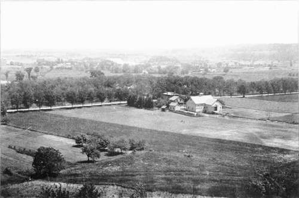
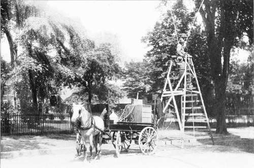

Protection From Insects
Description
This section is from the book "Tree Planting Streets And Highways", by William F. Fox. Also available from Amazon: Tree planting on streets and highways.
Protection From Insects
Protection from insects requires constant care and watchfulness. As the householder, generally, has only a few trees to look alter, he can, with proper cut- and diligence, effectually check any insect pest before serious damage is indicted. But neglect and carelessness on his part may result in the loss of his trees. At the hist sign of danger expert advice should be sought for .is to the proper remedies and methods to be employed. Where a large number of trees on a street or lawn are attacked by insects a spraying with poisonous mixtures must be resorted to.
Spraying is done with a duplex pump operated by a steam or gasoline engine, the machinery and tank being placed in a light spring wagon, and hauled with one horse from place to place. With 95 pounds pressure, or thereabouts, trees eighty feet high can be sprayed; and by using ladders, and hose with a spray nozzle, the under side of the leaves can be thoroughly drenched. This apparatus is used on streets and in public parks, or wherever a large number of trees require treatment. The citizen who is mostly concerned with the trees of his own street front or lawn can obtain satisfactory results from a hand pump with plenty of hose. To be effective the spraying must be done at the time the insects begin to feed.
* Prof. George 1". Stone, Hatch Experimental Station, Amherst, Mass. Dangers to Shade Trees; .1 paper read at a meeting of the Massachusetts Forestry Association, held in Worcester, Mass., Nov. [9, 1902.
Various mixtures have been tried - Paris green, London purple, and arsenate of lead each with good effect. Prof. Felt, State Entomologist, recommends the following preparation as an effective one against the ravages of leaf-devouring species: Dissolve eleven ounces of acetate of lead (sugar of lead) in four quarts of water in a wooden pail, and tour ounces of arsenate of soda (50% purity) in two quarts of water in another wooden pail. As the acetate of lead dissolves rather slowly in cold water, the process cm be hastened by using warm water. Pour the resulting solution into the spraying tank, which should contain about eighty gallons of water. Where a contact insecticide becomes necessary, as in the case with sucking" or biting insects, aphids, plant lice, scale pests, etc., he advises the use of this emulsion: Dissolve one-hall pound of hard soap in one gallon of boiling water, and, while still hot, add two gallons of kerosene; emulsify by passing rapidly through a force pump till it assumes a uniform creamy consistency and the oil does not separate. Dilute this with ten parts of water before using. In limestone regions use the sour milk emulsion, composed of one gallon of sour milk and two gallons of kerosene ; emulsify and dilute as described before.
The cost of spraying depends necessarily on the extent of the work the larger the number of trees, the less will be the average expense. In [898 the cost of spraying Elms in Albany was about fifteen cents per tree for each application; and in I9OO, with a more expensive apparatus and men working under the eight-hour law, it cost twenty-two cents. In Troy, trees were sprayed by contract at twenty-three cents for each spraying, a much higher price being charged for single or scattering trees. In New Brunswick, X. J., a contract for the season, including treatment as often as needed, was made at one dollar per tree. The expense, whatever it may be, is insignificant as compared with the value of the trees.
A simple and effective check on certain insects—the white-marked tussock moth for instance consists in destroying the egg masses. In [894 the school children of Rochester, N. Y., stimulated by liberal cash prizes, gathered 8,800,200 cocoons of this insect, and thoroughly eradicated the pest in that locality. Of the successful scholars, 65 received a §10 gold piece each, while others received smaller awards. The prizes, which were offered and paid by the Genesee Valley Forestry Association, amounted to much more than was expected; but the money was well expended and cheerfully paid, as the city saved its shade trees and secured immunity from further ravages of a destructive insect.
The limits of this article wall hardly permit of a description of the various insects and borers that infest our shade trees; or a recital of the many formulas for insecticides which have proved effective in checking their ravages.
A Well-Planted High Wav.—jefferson County, N Y
Portable Engine And Pump For Spraying Trees - Albany, N Y.
The insects which kill or injure shade trees may be divided into three general classes: (1) the leaf-devouring or masticating species; (2) the leaf-piercing, non-masticating, or sucking insects; (3) the borers. Prof. Felt, in the previous reports * of the Forest Commission, gives a minute description ol the tussock moth, forest tent caterpillar, leopard moth, maple borer, maple tree primer, cottony scale insect, elm leaf beetle, bag worm, fall web worm, spiny elm caterpillar, elm borer, elm bark louse, and elm snout beetle. These descriptions are accompanied by colored illustrations showing" the insects at each stage of transformation ; also, formulas for insecticides, spraying mixtures, and emulsions, together with the details of other methods that have proved effective.
Continue to: